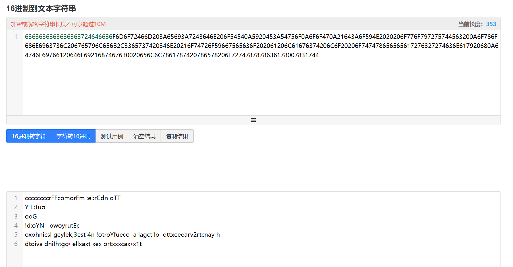

findkeys(decode)安全实验
Last Update:
Page View: loading...
安全项目findkeys（decode）
项目要求
主要目的：解码消息并找到密钥key1，key2，key3，key4的值，以下操作均在64位架构下进行
（x86架构下会有不同结果也会附到后面）
1. 找到key12
‘From：’从哪来？
提示中告诉我们先找key1 key2：attack the keys in two independent parts. Try to break the first two keys first.
并且告诉我们如果key1key2正确 得到的对应结果前面会出现From: （If you get the first and second keys right, a message that starts with From: will appear. ）
根据建议，先找key12的值，先看process_key12和extract_message12，前者是对我们即将传入的密钥值进行的操作，后者extract_message12通过读代码不难发现其实就是解密函数，而data就是密文
data值如下
1 | |
可以看出它是多个8位16进制数组合的数组，8位十六进制刚好是32位，也就是4字节（int类型）。想要得出具有有意义的内容，不难想到16进制转字符串，一个字符（char类型）1字节对应两个16进制数字，于是我们将去掉0x前缀和逗号的内容粘贴到转换网站里
6363636363636363724646636F6D6F72466D203A65693A7243646E206F54540A5920453A54756F0A6F6F470A21643A6F594E2020206F776F797275744563200A6F786F686E6963736C206765796C656B2C3365737420346E20216F74726F59667565636F202061206C61676374206C6F20206F747478656565617276327274636E617920680A64746F69766120646E6921687467630020656C6C7861787420786578206F727478787863617800783174

然而通过后面的解码函数extract_message12的解码逻辑（指定方式的顺序读入message来生成明文）看，以上转换是无法得出正确的转换结果的，因为其中含有无法正常阅读的符号
🤔那么问题出现在哪里呢，我们以0x72464663举例 ，7是最高位，3是最低位，观察内存可以发现这串数在内存中的存储方式是 63 46 46 72（内存的单位是字节，两个16进制一组），这叫做小端顺序，即低位地址在地址的低位（地址是从低到高看，前低后高）

所以data的读取方式应该是每组数以两个数为单位从后向前读，也就是0x72 46 46 63， 应该以63 46 46 72的顺序转换，所以自己写一个对应的解码程序,以下是正确结果

转换代码如下（其实是gpt写的😋）
1 | |
除了自己敲代码转换之外 ，我们可以以一种简单方式直接找到转换后的结果
我们可以直接打断点在程序内调试 在内存中查看&data的值，内存中本来就是小端顺序 所以内存右侧就是正确的转换结果

右侧就是vs自动帮我们转换的对应结果，截取放大如下

如何读出明文并找到key值🤔
通过提示“如果你正确地获取了第一个和第二个键， 将显示一条以 From： 开头的消息”
而extract_message1函数经过观察就是对data进行转换的解密函数，它的运行需要两个参数
start（起点）和stride（步长），而这两个参数又是通过dummy变量赋值的
解码函数代码如下
1 | |
观察这个函数逻辑，message是我们最后要得到的明文（以下简称msg），start+1就是data开始读入msg的位置（data强换了char*类型，一次只能访问一个字符），通过读循环可知stride的值影响内层循环的结束，内层循环（stride-1）次之后，j加加stride-1次，msg也按顺序读了stride-1个字符，但是内层结束后done为0继续循环，此时外层循环又给j++，进入内层又开始j++，而外层循环进行j++的时候我们没有进行msg的读入操作，所以会跳过data里的一个字符在进行读入，以此类推直到遇到结束符号。
这里插入一下上述代码的转换功能实现的细节：字符是以ascll码对应的值存储的，而在输出字符时会自动转换成字符输出，所以上述代码看似是读取数字，其实在printf之后会自动转换成字符串
了解extract_message1函数逻辑后，我们想要它正常运作起来，根据“如果你正确地获取了第一个和第二个键， 将显示一条以 From： 开头的消息”的提示，再结合这个解密函数的逻辑是从一定处开始读stride-1个字符然后跳一个字符再读stride-1个字符这样循环 可以试出 start = 9，（注意数组的起点是0）stride = 3，这样从第二个F读起，每读两个跳一个，发现刚好能凑出From ：

于是我们想要让start = 9，stride = 3，而这两个值又是通过变量dummy赋值的，所以我们需要观察dummy对start，stride的转换代码
1 | |
start： &dummy为整数dummy的地址
现在强转成char*类型 从4字节转换成 指1字节值的地址 并且会是低位地址 然后解引用得到的是低位地址的值，最后强转为int 类型 因为是char值升int 所以值不会产生丢失等变化 所以start就是dummy的值的前一字节 比如dummy是 11 22 33 44 ，start = 11.所以要想start = 9，dummy最低位字节应该是09
stride： 先将强转后地址加 ‘1’再解引用，这里涉及到指针的加法运算
指针加法时，指针的步长是与指针所指向的数据类型的大小，强转char*型后步长变为1字节，所以stride是dummy的第二个字节，要想让stide为3，dummy的第二个字节就要为03，
所以整型变量dummy应该是 09 03 xx xx，才能让解码函数正常运行，我们让dummy为09 03 00 00，
也就是十六进制下的309，通过十六进制转十进制可以得到dummy为3*256+9=777
现在我们找到了dummy的值 然而dummy被初始化为1，达不到我们的目的，蓦然回首，项目提示中有这句话
In breaking the first two keys, realize that the function must be somehow changing the value of the variable. because the variables and control the extraction of the message.
这指示我们一定要改变dummy的值then how？
因为我们不能直接改变代码 我们除了分析唯一能做的事就是传参，所以我们需要通过传参来改变dummy的值，我们传的值就是key1，key2，于是乎看processkey_12函数
1 | |
可以看到这个函数是对传入的指针key1 key2进行操作，我们来深入分析下这个函数，
key1本身是指针 key1解引用后也就是值，这涉及到我们刚才说的指针加法运算，key1是指向int类型的指针，所以key1 + key1实际上是让指针指向的地址向后走（4 乘以 （key1））个字节，然后整体再强转int类型，最后再解引用，得到的是相应计算后指向的地址的4个字节的值，而赋值式子右侧的key2被赋给左侧这个式子，而key1，key2本身的值是由我们传入的，所以我们可以传入key2的值使得左侧式子被赋成我们想要的值，而key1的值同样为我们所传入，左侧传入key1后可以在key1的地址上做移动使得左侧指向指定的地址的值然后被key2赋值，总而言之，我们可以通过改变key1，key2的值来用这个式子改变任意已知地址变量的值为指定值
于是我们想用这个式子来改变dummy的值，我们打断点调试key12相关的代码然后在监视中取dummy地址和key1地址

| 名称 | 值 | 类型 | |
|---|---|---|---|
| &dummy | 0x000000000014fc14 {1} | int * |
| 名称 | 值 | 类型 | |
|---|---|---|---|
| key1 | 0x000000000014fc74 {-24} | int * |
我们发现key1的地址比dummy高96，我们想要
key1 + *key1准确定位到dummy的地址，所以（key1） * 4 =-96 ， key1 = -24
我们想要dummy赋值为777，所以右侧*key2 = 777。（必须在64位下）
我们打开vs的项目属性 在调试中传入参数 -24 ，777， 1，1（后面key34未知所以随便填）
运行得到以下结果

说明key1，key2正确
2.What about key3&key4?
key1和key2相当于一个引导，因为key1，key2相关的代码和key3，key4很对仗，可以想到key3，key4就是他们的升级版
分析得到的新tip
我们来看破解前两个密钥后的得到的提示信息
提示让我们找到能强制调用extract_message2函数而避免调用extract_message1的key3，key4的值
以下为相关部分代码
1 | |
可以看到我用/////标注了两个process_keys34(&key3, &key4)函数用/**/标注了extract_message1和extract_message2，根据提示我们想要跳过执行
msg1 = extract_message1(start, stride);/**/这一句
然后进入if执行msg2 = extract_message2(start, stride);/**/这一句就能得到正确答案
extract_message2(start, stride)的start和stride保持不变
实际上通过分析extract_message2(start, stride)的代码 我们发现它和extract_message1相似
1 | |
它的读入方式是从data的 start位开始单层循环 每次读入一个字符然后跳stride-1个字符，如果key1，key2不变，start = 9，stride = 3，在这里就是从第9个字符开始读一个跳过两个，我们会发现这样读入仍然会得到有意义的字符串From ：CTE…………..

这启示我们不用改start，stride的值和extract_message2之后怎么操作字符串，可以专一进行强制调用extract_message2函数而避免调用extract_message1的建议
如何做到避免调用和强制调用函数
类比 **((int*)*(key1 + *key1)) = *key2这个可以修改任意地址里的值的万能式子
(((int)&key3) + *key3) += *key4 这个式子可以让我们使得任意地址里的值加上 *key4
我们正是需要用到这个式子来做到强制调用函数
这里有两种强行步入函数的方法
方法1.修改data对应的值满足if条件来步入条件分句
注意到，影响调用extract_message1还是2的if条件如下
1 | |
如果msg1 == ‘\0’就会步入我们想要的extract_message2函数得到结果，如果我们不做任何修改，会直接执行else语句打印msg1，我们想要打印msg2，就需要满足if条件让msg1=‘\0’，而我们正好拥有改变指定地址值的power😋
if I want *msg1 == ‘\0’,then I have to take it.（乱入）
想修改msg1的结果 我们需要倒回去看的读入条件extract_message1
1 | |
if ((((char)data) + j) == ‘\0’)是中值循环的主要条件，而j第一次为start+1=10，也就是data数组的第十个字节，如果我们把它赋值成’\0’，这个函数就会什么都不读入，message就会默认为空，
*msg1 == ‘\0’就会成立
所以接下来就是运用key3，key4来修改指定值的时机了
(((int)&key3) + *key3) += *key4//注意是 +=
我们取data地址，将其第十个字符改变为 \0 （ascll里的00）//注意是数组的10（从0开始）
直接在内存窗口里输入&data回车

我们想改第10个字节 46 为 00 ，我们的修改是int类型的，一次修改4个字节，所以找到data[2]的内存位置0x0000000140006088 将63 46 46 72（0x72464663） 改为63 46 00 72 （0x72004663）也就是让*key4 = 两数相减为-4,587,520
接下来算key3 （（int*）&key3 + *key3）应该表示data[2]的地址0x0000000140006088
&key3的值在内存中查看得到为0x000000000014fbf0 注意是&key3 不是key3
我们让0x000000000014fbf0 +（*key3 ） *4 = 0x0000000140006088 （指针运算法则）
经过计算得到*key3 = 5367358616/4=1341839654
//这种方法的*key4应该一致，key3地址偏移量会根据机器不同而不同
我们将四个值传入运行


最后结果如上 这代表我们传入的四个值都正确
方法2 利用栈帧分析改变函数的返回地址
再次强调 64位和x86结果不同 不过两种情况下的分析方法相同
我们回到找key3，key4要解决的问题：强制调用extract_message2函数而避免调用extract_message1
上一种方法我们用的代码里给的if语句修改值满足条件步入extract_message2，这里我们使用修改函数的返回地址的方法来达到目的 ，这需要一点栈帧结构的知识
64位下栈顶为RSP 栈底为RBP
x86下栈顶为ESP 栈底为EBP
在一个函数的反汇编的代码末尾处 栈顶RSP会指向函数的返回地址 我们只需要记住这一点就能分析
这次需要我们打开寄存器和反汇编
我们在process_keys34处打断点 调试到这一步的时候会步入process_keys34的定义
调试


在反汇编中可以看到两个process_keys34的反汇编代码 他们对应的最后一条代码左侧的地址就是返回地址所在地址，我们所做的就是将第一个代码的返回地址改成到第二个代码的返回地址，这样就能实现步入extract_message2函数
可以看到第一个process_keys34返回地址是0000000140001533
第二个process_keys34返回地址是0000000140001567
两者相差52（注意是16进制啊喂）也就是我们想要将存放返回地址的指针里的值加52
上面已经提到 这个存放返回地址的指针就是栈顶RSP 所以我们查看寄存器RSP的值
点击反汇编窗口使得调试过程在反汇编中进行 一步步调试知道转到process_keys34的定义 在调试箭头指向定义最后的ret处时查看寄存器RSP

此时查看寄存器RSP=000000000014FBE8 这个地址存放的就是第一个函数process的返回地址

通过查看内存也可以验证这一点

刚好就是0000000140001533 和刚才第一个process函数返回地址相同
所以接下来我们就利用power改变RSP的值 让他加上52
我们又回到了key3 key4的这个式子

让*key4 = 52 （其实也可以是53，因为procee_key34最后一条汇编指令本身就是空指令nop 不执行也没关系）
让(key3 + ((int)&key3))) 为RSP地址000000000014FBE8
查看&key3为000000000014fbf0 通过指针运算 4*（*key3）+&key3 = 000000000014FBE8
求得*key3 =-2（注意负号）
所以此时*key3 = -2 *key4 = 52或53

运行发现也能得出相应正确结果

总结
补充
1.x86架构下用修改函数返回地址方法做出的结果如下

其实777（ *key2或dummy的值）有很多种情况 因为start 和stride只取了它的第一字节和第二字节地址 剩下的两个字节地址均可以任意填充
2.心得体会
提示建议的作用很大 比如改变dummy变量的值和步入extract_message2函数这两个提示
还有这两个我们的作用式子
1 | |
有了这两个函数我们可以改变任意变量的值 还记得我理解这个式子的作用时的喜悦，感觉拥有了帕瓦，简直是超模😋
3.栈帧结构的入门太简单了，根本无法独立做题，希望以后老师给的的入门教程能多一点
4.不同的环境下的结果不同，不同的方法结果也不同，题目的解答多样化，很好地体现了我们面向实际的理工科性质，现实情况只会更加复杂
参考资料
这题的思路主要总结了前几位学长的思路方法，博客链接或视频链接如下
【C语言】SCU安全项目1-FindKeys_findkeysc语言-CSDN博客